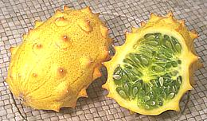
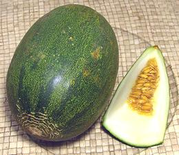
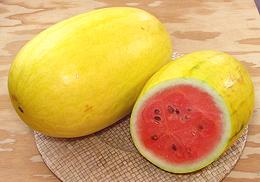

SAFARI
Users
General & History
There are two broad categories of melon and one odd one.
Muskmelons:
C. Cucumis melo, the same genus as Cucumbers, probably originated in Western Asia (Persia and surrounding). These melons have thick walls and hollow centers containing loose seeds and fibers.Watermelons:
C. Citrullus lanatus, of African origin. These melons have solid, almost uniform flesh all the way through with seeds embedded in the flesh.Horned Melons
C. metuliferus, of African origin and internally built more like a Tindora Gourd than like any of the other melons.
Melons are generally eaten mature when the flesh becomes sweet, which contrasts with gourds, squash and cucumbers which are eaten immature. The rind is tough but not hard and the flesh is always watery. Most are eaten raw but some are cooked, particularly in soup. Most have thick walls and a hollow center containing seeds, but the Watermelons are solid and uniform all the way through with seeds embedded in the flesh. Most melons will store at room temperature maybe a week and not much longer refrigerated, but there are a few, such as the Hami and Christmas melons that will store much longer at room temperature.
Melon Terms
- Sutures - grooves running from the flower end to the stem end.
- Netting - a raised pattern of lines in a netlike pattern, generally light tan in color, These are very intense on the familiar muskmelon.
- Slip - dropping the stem when ripe. A melon that normally slips, such as a muskmelon, that has some stem or tears where the stem was is picked too unripe. Many melon types do not slip so some stem or stem tear is normal for those.
- Winter melon - commercial term for late maturing varieties, not to be confused with the "Winter Melon" seen (usually cut in large chunks) in most Asian markets, which is actually a gourd.
Varieties
All Melons (with the exception of Watermelons) are of the same species, C. melo, so can be interbred to create new varieties. There are, however, several recognized C. melo varietal groups.
- Cantalupensis group (now includes Reticulatus) have an often netted rind and aromatic flesh ranging from salmon to orange but sometimes green. These include the muskmelon (called Cantaloupe in the U.S.), true cantaloupes, Persian melons, and others. These melons slip their stems when ripe. Reticulatus designates the netted rind melons as distinct from true cantaloupes which are sutured but not netted.
- Conomon Group: Oriental pickling melons, used in Korea and Japan. Not found in North America and scarce in Korea.
- Inodorous Group: late-maturing melons called "winter melons" in U.S. agriculture, including crenshaws, casabas, honeydews, Juan Canary, Santa Claus. These melons have non-aromatic flesh usually green or white but sometimes orange. They do not slip their stems when ripe.
- Flexuosus group: the snake melons, or snake cucumbers (not to be confused with the snake gourds).
- Conomon group: Oriental pickling melons. Generally smooth, cylindrical, green, white or striped, with white flesh.
- Dudaim group: mango melon, pomegranate melon, Queen Annes melon. These are small and round to oval, light green, yellow or striped with firm yellowish-white flesh. Not seen in North America.
- Adzur Group / Chate Group Ancient melons always eaten unripe. They are still grown in Egypt, the Levant, and Puglia Italy. they are closely related to the Flexuosus group, with properties similar to the Armenian Cucumber. Not seen in North America.
- Mormordica group: phoot and snap melons. The fruit is oval or cylindrical with smooth skin that cracks at maturity. Not seen in North America.
Afghan Melon
[reticulatus group]
This melon is similar to the Persian Melon
but greener with rather sparser netting. They are only moderately sweet
so should be selected with a fair amount of flex at the flower end to
assure ripeness. I haven't seen these for awhile, but they're sure to
become more common in the future. When the U.S. pulls the troupes out of
Afghanistan anyone who cooperated will have to leave the country and
they'll head straight for Los Angeles where every other ethnic group
has settled. Soon they'll be opening restaurants and demanding Afghan
melons in the markets.
Ananas Melon
[Middle Eastern melon]
There seems to be a lot of variation in melons called "Ananas".
Some by this name are spherical and have sutures, and may also have
light netting or blotching. Others are oval and lightly netted over
green or orange skin, with no or very faint sutures. The photo specimen
is sold as "Melon Ananas d'Amérique à Chair Rougea" and
is said to be similar to those grown by Thomas Jefferson in his garden -
or by his slaves, anyway. Another "Melon Ananas d'Amérique
à Chair Verte" has green and yellow flesh and yellow skin with
light sutures and very light netting. The photo is of an unripe "Melon
Ananas d'Amérique à Chair Rougea". The light splotches
will be more white when fully mature. In any case, the flesh is
aromatic and very sweet, and the melons are from 3 to 5 pounds in weight.
Photo by Rasbak distributed under license Creative Commons
Attribution-Share-Alike v3.0 Unported, attribution required.
Armenian Cucumber
[Snake Melon / Snake Cucumber, Uri (Japan), Metki, Mikti (Near East), Wild Cucumber (commercial), Cucumis melo var. flexuosus]
Market size varies widely from 6 inches long and 1-1/4 inches diameter to 21 inches long and 2-1/2 inches diameter but they can grow to a yard long and over 3 inches in diameter. They are very much like a cucumber in structure and in taste, if raw. The skin is very thin and tender and is almost never peeled. Smaller sizes are often pickled and the resulting pickles have a rather different flavor from cucumber pickles.
Armenian cucumbers are seasonally available fresh in Southern
California (May to July) and are grown as a garden vegetable in Florida
and other suitable areas, but I understand they're almost impossible to
find fresh in Armenia. Pickled they can be found in any market serving
a Western Asian or Near Eastern community. They're usually packed in
Lebanon or surrounding regions and labeled "Mikti" or "Wild Cucumber".
The front photo specimen was 12 inches long (uncut), 2 inches diameter
and weighed 14-5/8 ounces. The middle one was 14-1/2 inches long (if
straight) 1-3/4 inches diameter and weighed 10-1/8 ounces
Details and Cooking.
Bitter Melon
It's not a melon, it's a gourd - see Bitter Melon
Canary Melon
[Juan Canary, Jaune des Canaries, Amarillo, PLU #4317, C. melo (Indorus group)]
This bright yellow mellon, oblong and pointy at the ends like an
American football, is now grown by the truck load in California. A fully
ripe Canary is about as sweet as melons get. The flesh is firm, almost
crisp, white to faintly greenish, and light pink or orange around the
seed cavity. Select melons that are bright yellow and springy at the
flower end but not mushy. This melon is a yellow variety of the
Piel de Sapo, a melon popular in Spain. The photo
specimen was 9 inches long, 6 inches diameter and weighed 5 pounds 7 ounces.
Cantaline
[Orange Flesh Melon, Kandy Melon, PLU #4327]
This cross between a cantaloupe and a honeydew has been grown more
in South America than in North America, but is becoming more available
here. It's marketed as "Orange Flesh Melon" and "Kandy Melon". The flesh
tastes similar to cantaloupe, is firm, almost crisp, and quite sweet right
to the thin rind. The rind is smooth with some scattered netting and when
ripe becomes quite pale, sometimes almost white. Also look for some
springiness at the flower end. The photo specimen was 6 inches diameter
and weighed 3 pound 13 ounces.
Cantaloupe
[var reticulatus] The true Cantaloupe is seldom grown outside southern Europe, mostly Italy. Unlike the Muskmelon the skin is hard, deeply sutured, warty and lacks the orderly netting of the Muskmelons. See Dulcinea "Tuscan Style" Cantaloupe and Muskmelon for melons available in North America.
Cantaloupe - Muskmelon
The common market "Cantaloupe" in the U.S. is actually a Muskmelon,
not a True Cantaloupe. I realize the entire
fruit and grocery industries go along with calling it "cantaloupe", but
I'm going to call it a Muskmelon anyway - and
besides, that's what my Connecticut based family called it when I was a
child.
Cantaloupe - Athena
A preferred Muskmelon for growing in the Eastern U.S. because they mature early, this oval melon has coarse netting over a yellow-orange rind and is usually lightly sutured. The flesh of this 5 to 6 pound melon is yellow-orange and firm.
Cantaloupe - "Tuscan Style"
[reticulatus group]
A specialty of Dulcinea Farms in California - it is, of course, a
Muskmelon, not a true Cantaloupe.
Carosello & Barattiere
[Cucumis melo subsp. melo, probably Chate Group (syn. Adzhur Group)]
These Melons are grown mainly in Puglia, in the heel of Italy, where they
are highly thought of - the rest of Italy may be too cool. They come in many
shapes, and are closely related to the first melons to be cultivated in
Ancient Egypt, the Chate Melons and Snake Melons.
They are always eaten in the unripe form, as Cucumbers are. Their
characteristics are similar to the closely related
Armenian Cucumber, a Snake Melon.
Photo by Angelo Signore distributed under license
Creative Commons
Attribution-ShareAlike v3.0 unported.
Casaba Melon
[PLU #4320, C. melo (Inodorus group)]
This fairly large mellon (4 to 10 pounds) has a wrinkly skin and is usually flat at the flower end and with a point where the stem attaches. The white to slightly yellow flesh has little flavor and is only lightly sweet when the melon is fully ripe. It ripens unevenly, very soft near the seeds and still rather firm near the rind. Personally, I don't see the point of this melon since sweeter, more flavorful melons are available at the same price per pound.
Casabas are ripe when the flower end has plenty of give but is still
springy. This melon has no odor so that isn't an indicator of ripeness,
and it does not slip when ripe so stems or stem tears are not an
indicator it was picked too soon. The photo specimen was 8-1/2 inches
diameter, 7-1/2 inches long and weighed 9 pounds 3 ounces. The Casaba
melons originated in western Asia and in the U.S. is grown mainly in
California.
Cavaillon Melon
A French variety of the True Cantaloupe from the town of Cavaillon. It is considered very highly for flavor and is now grown in various places around the world including the USA. Some are grown in California but I have yet to see them in the markets - they probably all go to the fancy chef set. The flesh is a light orange and they are said to be ripe when a small crack appears at the stem end, as in the photo. Photo by Jean-louis Zimmermann distributed under license Creative Commons Attribution-Share Alike 2.0 Generic.
Cavion Melon
A small globe shaped European melon with gray-green netted rind and very shallow dark green sutures. The flesh is intensely orange and fragrant. Could be a misspelling of a variety of Cavaillon Melon.
Charentais Melon
[French Breakfast Melon, Chaca, Italian Melon, French Kiss (marketing); Hakucho (Japan); Cantalupensis group]
This is a small European melon, globe shaped with a smooth to slightly netted gray, gray-blue or yellow-green rind with distinct but shallow sutures. Flesh color ranges from greenish to intense orange depending on cultivar. Some sources say if the color of the rind becomes yellowish they are over-ripe, but, again, that seems to vary with cultivar - these were just about perfect.as shown.
This is an aromatic melon with flesh that's exceptionally sweet right
out to the very thin rind. Flavor is quite attractive and somewhat lighter
than cantaloupe. This is the favorite melon of the French, who commonly
use it as a breakfast melon. Cut in half it will serve two. They also
split them in half, scoop them out and fill with a sweet wine such as
Marsala or Madeira to serve as an appetizer. The larger of the photo
specimens (the cut one) was 5 inches diameter and 2 pounds 3-1/4 ounces.
Chate Melon
[Adzhur Melon; Cucumis melo subsp. melo Chate Group (syn. Adzhur Group)]
This is the first melon to be cultivated, and was popular in Ancient Egypt,
from where it traveled into the Levant. It is still grown in Egypt today.
Most translations of ancient documents call it "cucumber", but the cucumber
was unknown in the region until much later, introduced from India during
Classical Greek and Roman times. On the other hand, like the
Armenian Cucumber, a Snake Melon, it
is eaten immature and is very much cucumber-like. Unlike the cucumber, it's
outside is very fuzzy.
Photo by Dr. Harry S. Paris ©, permission granted,
attribution required.
Christmas Melon
[Santa Claus, Inodorus group]
These 5 to 8 pound football (US) shaped melons have a mottled
yellow or green rind and pale green or pale orange flesh depending on
variety. The photo specimen was 8-3/4 inches long, 6 inches diameter and
weighed 5 pounds. They are very sweet when ripe and are similar to
Piel de Sapo with some varieties looking very much
like that melon but others are smoother and some have a little or a lot
of netting as in the photo. These melons get the name Christmas or Santa
Claus from their late season harvest excellent keeping properties - even
to Christmas if stored in a cool place.
Citron Melon
[Pie melon (U.S.), Tsanna Citrullus lanatus var. citroides]
This melon is thought to be ancestral to the Watermelon and originated in Africa. It now grows wild in Baja California though no one knows how it got there. It is also both cultivated and considered a weed in much of the Southern U.S. though rarely in pure form there due to accidental cross breeding with commercial watermelons.
This melon is not to be confused with the citrus fruit
Citron, though they are both used mainly
candied or as preserves and pickles. Citron melon is very high in pectin
so is a desirable ingredient for preserves. The flesh is much stiffer and
more strongly flavored than that of watermelon.
Details & Cooking.
Photo by Kazorpal distributed under license Creative Commons
Attribution-Share-Alike v3.0 Unported, attribution required.
Colocynth
[Bitter Apple, Bitter Cucumber, Desert Gourd, Egusi, Vine of Sodom, Wild Gourd; Citrullus colocynthis]
This melon grows under very harsh arid conditions. It is found in the Sahara Desert and Sahel regions of Africa, and ranges as far east as India. It was well known in Ancient Egypt, and there is evidence it was in use at least as far back as the Neolithic.
Colocynth is related to the Citron Melon and
Watermelon, but the fruit is less than 4 inches in diameter, and its white
flesh is dry, spongy, and very bitter. The seeds are also somewhat bitter.
They are pressed for oil, or are roasted and eaten whole. These seeds are
used to make Egusi, a thickener used
in West Africa, but seeds of other watermelons may also be used. In Nigeria,
Colocynth is intercropped with Cassava. It is cultivated in India, and on
a small scale on the island of Cyprus.
Photo by Ji-Elle distributed under license Creative Commons
Attribution-ShareAlike v3.0 unported.
Collective Farm Woman Melon
A Ukraine melon, spherical, 7 to 10 inches in diameter with smooth skin.
It is ripe when the skin turns from dark green to light orange. The flesh
is light yellow-green getting darker near the rind and is very sweet and
aromatic. This is an early ripening variety that can be grown as far
north as Moscow. Some are now grown in North America but not yet on a
commercial scale. Photo copyright unknown - but it's
splashed all over the Internet.
Crenshaw Melon
[ Cranshaw, C. melo (Inodorus group)]
Cranshaw, C. melo (Inodorus group)]
This is a hybrid between the Casaba and Persian melons that weighs in
at 5 pounds or higher. It is a bit flattened at the stem end giving it an
acorn shape. The skin, though still wrinkly is a bit smoother than the
Casaba. Yellow when ripe, older varieties have green flesh and newer ones
have salmon pink flesh.
Duda'im Melon
[Dudaim, Queen Ann's Pocket Melon, Cucumis melo subsp. melo Chate Group (syn. Adzhur Group)]
This melon is pretty much inedible, but is a popular garden decorative. It is
also valued for its strong perfume-like aroma. The photo specimes are fully
ripe and orange, but some cultivars pass through many colors as they mature.
The flesh is thin and insipid, though some cultivars may have a hint of
sweetness. Other cultivars may also be very sour or bitter. These melons
originated in Persia around the 9th century CE and were carried as far as
Andalusia by Islamic invaders. They are generally 3 inches diameter or less.
Photo by Poisondartfrog distributed under license
Creative Commons
Attribution-ShareAlike v3.0 unported non commercial
Galia Melon
An Israeli melon with a netted rind similar to a Muskmelon but paler in color and not as distinctly netted. It is a cross of Cantaloupe and Honeydew. The flesh is pale green to white, similar to a Honeydew, and has a banana like aroma. These slip their stems when ripe so any stem or stem tears indicate picking before fully ripe. They are now common in Southern California, grown here, in the U.S. South and in South and Central America.
Gaya Melon
There are several varieties of Gaya mellon, so different from each other you would wonder why they have the same name. The two here are the most available, and both are most likely to be found in Asian markets.
Ivory Gaya MelonOriginally from Japan, this melon is now grown in Mexico and South America, but the photo specimen was procured at a Los Angeles farmer's market from a Japanese grower who described it only as "Japanese Melon". I have recently seen it in one of the larger Asian markets in Los Angeles. It has excellent keeping properties (these melons sat around on my kitchen floor for nearly 2 months before I got around to photographing them). The rind is very thin, the flesh is crisp and moderately sweet and the stems were not slipped. Chamelon Gaya MelonOn the outside this mellon looks a lot like a Piel de Sapo but inside it's different. In the center the flesh is light orange shading to white, then green as it gets closer to the hard but very thin rind. It's said to taste like pears and bananas, but I think its soft flesh tastes like an extremely sweet melon. It is ripe when it has some give at the flower end. The photo specimen, purchased from an Asian market in Los Angeles marked as "Green Melon", weighted 2 pounds 6 ounces and was 6-1/4 inches long and 4-1/4 inches diameter. The stems do not slip. |
Gallicum
- see Ogen Melon.Green Melon
 [Taiwan Green Melon, Taiwanese Musk Melon, Taiwan Saphire melon;
Xianggua (Taiwan (Fragrant Melon))]
[Taiwan Green Melon, Taiwanese Musk Melon, Taiwan Saphire melon;
Xianggua (Taiwan (Fragrant Melon))]
I have Purchased these from Asian markets in Los Angeles from early July through August, sold as "Green Melon" or "Taiwan Green Melon". A seed company reports they are used for cooking in various ways. The largest of the photo specimens weighed 1 pound 6 ounces, 4 inches diameter and 4.5 inches long. Most are smaller. 2018 US $1.99 / pound.
These were sold not quite ripe with crisp, very moderately sweet
flesh, as would be expected for a pickling melon. The flesh becomes
fairly soft when fully ripe, with just a touch of crispness near the
peel. Fully ripe the flesh is moderately sweet and the flavor is
similar to Honey Dew, but not as sweet. To chose one that is optimally
ripe, look for a yellow blush on part of the melon. If it is all
yellow it may be over ripe.
Hami Melon
[reticulatus group]
This type of "Chinese muskmelon" originated around Hami in the Uighur lands of Central Asia now claimed by China as Xinjiang Uygur A. R. provence. Several varieties are now grown in California and Oregon as well as in Tajikistan, Uzbekistan and other adjacent Central Asian countries.
They are generally football (US) shaped with a yellow-green lightly
to only vaguely netted rind and orange, salmon, white or green flesh. The
flesh is distinguished by being fairly crisp, even brittle, and most are
just medium sweet. The flesh freezes well so they are good for frozen
deserts. Hamis keep well and will store for a couple of weeks or more at
a cool room temperature.
Hami Melon - Oval[PLU #4332] This is the Hami melon most common in Southern California markets. They can grow to as much as 11 pounds but the photo specimen was 7 pounds 3 ounces, a bit above average, and was purchased in mid July. The rind is yellow-green and lightly netted. The flesh may be orange, salmon, white or green depending on variety. It is crisp and light, almost airy, with medium sweetness and medium melon flavor. To be sweet these melons need to be very ripe, so select ones that
have a fair amount of give at the flower end (but no sign of rot).
They will ripen more if left sitting on the kitchen floor, but it's
a long lasting melon so it'll take time. These melons do not slip
their stems.
Hami Melon - New Century[Uzbek Hami Melon] This Hami melon started to appear in quantity in Southern
California markets in July 2008. The photo specimen is typical at
8-1/2 inches long, 5-1/2 inches in diameter and 4-1/8 pounds with
very lightly sutured smooth green skin. The medium sweet flesh is
light orange and has the typical Hami crispness. Select melons that
have a fair amount of give at the flower end (but no sign of rot).
These melons do not slip their stems.
Hami Melon - Round[reticulatus group] A globe shaped melon with a white or light yellow smooth rind and light orange to pink flesh. The flesh is crisp as with oval Hami melons and they can grow to about 12 pounds but more often are around 5 pounds. I have not seen any in Southern California. |
Honeydew Melons
In simpler days there was only one, the one called just plain "Honeydew", but now there are several.
Honeydew MelonA round melon with an almost white rind which may be slightly green or slightly yellow. The flesh may be white, pale green or pale orange, firm and similar to the Muskmelon, but sweeter and with a milder flavor. Golden HoneydewA yellow version of the Honeydew. The one in the photo weighs 3 pounds 11 ounces and is 7 inches long by 6 inches diameter The flesh is white and quite sweet even when still a little crisp. It is ripe when the flower end has some give. Orange-Flesh Honeydew[Temptation Melon] Actually this is a Muskmelon but has the appearance and size of a white honeydew melon. The flesh is medium orange turning green towards the rind. It is ripe when the rind starts to take on an orange tint. The flesh is similar to other Muskmelons but a little more delicate and honeydew like. |
Japanese Melon
[reticulatus group]
A round to slightly oval melon with strong netting on a green rind.
They are generally 3 to 4 pounds with very sweet white to green flesh.
In Japan these are very expensive "gift melons" selling for around US
$100 each. They are hothouse grown with controlled heat to assure
highest possible sweetness, and then expensively packaged. These melons
don't slip, but stem tears would be unthinkable, so they are normally
sold with a piece of the vine still attached. Young melons are sometimes
scratched to produce scars if the netting pattern needs a little filling
out. In California these melons could be field grown, but nobody seems
to bother.
Photo by
Bobak Ha'Eri distributed under
Creative Commons
Attribution-Share Alike 2.5.
Kiwano
 [#4302, Horned Melon, Melano, Horned Cucumber, Jelly melon, English tomato, Metulon (France), Cucumis metuliferus]
This odd African melon is grown in the Kenya, Israel, New Zealand and the U.S. as a decorative fruit and in Australia as a noxious weed. Now grown commercially in California they have a long shelf life and are easily shipped so you will find a few in supermarkets but often at prices that will leave you gasping. The photo specimen was 4-3/4 inches long, 2.8 inches diameter and weighed 11-3/4 ounces, from a small chain supermarket for $2.99 each or $4.07 / pound. Major supermarkets may charge as much as $4.99 per melon.
They are sold mainly as a curiosity and are not expected to be a
viable food crop until varieties with a higher sugar content are
developed. Currently they have a light refreshing flavor but are not
real sweet. It's the seed mass you eat as there is very little edible
flesh inside the hard rind. Note: seed merchants are also selling
purely decorative varieties which look about the same but are very
toxic. You won't eat those by accident because the toxin is extremely
bitter. Details and Cooking
Korean Melon
[Yellow melon, Oriental melon; Yeoncheon, Dua Gan, Cha Mae, Chamoe (Korea); Huangjingua, Tian Gua (China); Makuwa (Japan); Dura Gan (Vietnam); Cucumis melo var. makuwa]
This small bright yellow melon with shallow light yellow sutures is commonly found in Chinese and Korean markets. The photo specimen was typical at 1 pound 1-1/4 ounces, 4-1/2 inches long and 3.5/8 inches diameter. It was purchased from a large Asian market in Los Angeles (San Gabriel) for 2016 US $1.79 / pound. The most perfect ones are sold in Korean markets at a significantly higher price.
The crisp flesh of this melon is white to pale peach and moderately
sweet. The rind is very thin and doesn't need to be peeled, though it
commonly is peeled. The seeds are very small and soft, and the seed mass
is always eaten with the flesh as it is by far the sweetest part. In Korea
there are many varieties, and many are pickled, or even made into kimchee.
Only the sweetest varieties are marketed in North America, but they can
still be pickled. This is a perishable melon and should be eaten within
5 days of purchase.
Korean Melon
[Hybrid Golden Honey]
A hybrid recently developed in Korea, this ia a round to slightly oval
smooth yellow skinned melon often found in Korean markets. These are
"gift melons", carefully grown to be blemish free and even in California
sell for around $2/pound when in season. The photo example weighed 2-1/4
pounds. The stem does not slip so some stem is included (a stem tear would
be an unacceptable blemish). The flesh is a very pale yellow-orange to
white, fairly crisp and quite sweet. They are ripe when there is some
springiness at the flower end. See also the sutured
Korean Melon, also commonly found in Korean
markets.
Mediterranean Melon
An oval melon with a slightly netted sutureless rind which ripens to yellow-gold with green splotches. The soft flesh is white with a touch of pink at the seed cavity.
Muskmelons
[Cantaloupe (North America), reticulatus group] The Muskmelon is the "Cantaloupe" of North America as distinct from the True Cantaloupe of Europe. Until recently it was the only kind of cantaloupe you could buy in North America, but melon growers in California and Arizona seem determined to grow every melon known to man, so European cantaloupes are now available.
Muskmelon, Eastern[reticulatus group]
A round melon that is little seen outside the growing area in eastern
North America because it doesn't ship well. Unlike the common Western
Muskmelon these have both netting and sutures. The flesh is orange
(some green fleshed varieties are grown) and they have a distinctive
aroma when fully ripe. These slip, so a stem or tears in the fruit
where the stem was indicate it was picked unripe and will have
inferior flavor.
Muskmelon, Western[Cantaloupe (US), PLU #4050, reticulatus group] This round melon is commonly called "Cantaloupe" in the U.S., but is not a True Cantaloupe. These melons have very dense netting and no sutures, orange flesh, a distinct aroma when fully ripe and the familiar muskmelon flavor. The flesh is quite firm even when fully ripe, the rind is strong and they keep a couple of weeks making them the preferred muskmelon for U.S. commerce. These slip, so the stem scar should be deep and smooth at the bottom with no stem fragments or tears, which would indicate it was picked unripe and will have inferior flavor. The photo specimen was near the large end of the range, 7-1/2 inches
long, 6-3/4 inches diameter and weighing 5 pounds 6 ounces.
"Tuscan Style Cantaloupe"[reticulatus group] This melon is a specialty of Dulcinea Farms, a large melon grower in California. It is deeply sutured like an Eastern Muskmelon, but has the fine mesh pattern and excellent shipping properties of a Western Muskmelon. The Tuscan is a beautiful melon to look at - right up to the point when it is fully ripe - then it becomes as grungy as shown the photo. The photo specimen weighed just over 6 pounds and was 8 inches long
and 6-1/2 inches in diameter. It was eaten the day after this photo
was taken and was perfectly ripe and delicious. For how they look in
the store see Details and Cooking.
|
Ogen Melon
A round, 3 to 5 lb melon with netted and sutureless rind which turns [Gallicum] golden yellow when mature. It is grown primarily in Israel. The flesh is green and highly aromatic. This melon slips its stem when ripe so there should be no stems or stem tears.
Orange Flesh Melon
- see Cantaline Melon.Oriental Pickling Melon
[Wolgwa (Korea); Shirouri (Japan); Cucumus melo, Conomon Group]
This melon has been used pickled in Korea and Japan, mostly for court or
celebration dishes. It is not commonly used today because it has become
rather difficult to find, now mostly a home garden item. It is not sweet,
more cucumber like, and eaten immature. They can be up to 11 inches long.
Photo by
distributed under license Creative Commons
Attribution-Share-Alike v4.0 International.
Papaya Melon
 This melon, is popular in Asia. I found the photo specimens at a large farmer's market in Pasadena, California at the absurd price of US $1.69 / pound (fortunately they are small). I also found a Web page describing this melon (with photo) from Singapore. They're a bit more expensive there at S$25 (US $17). The melon shown appeared substantially smaller than mine, so that'd probably be about US $17 per pound.
Of course in Asia these melons are very carefully grown to make sure
appearance is perfect, because the two most potent flavor enhancements
used in Asia are perfect appearance and an absurdly high price. The photo
specimen was 5-3/4 inches long, 4 inches diameter and 1 pound 9-3/4
ounces.
Pepino Melon
Not a melon but a nightshade berry related to the tomato. See Pepino
Persian Melon
[Reticulatus group]
Similar in appearance to a Muskmelon but
larger (generally around 5 pounds) with sparser netting over a greener
background. There are also more spherical varieties but the elongated
variety is the one most grown and sold in Southern California. The
pink-orange flesh is somewhat milder than Muskmelon. Unlike Muskmelons
the Persian does not slip it's stem when ripe, so a bit of stem or stem
tears do not mean it was picked too green.
Piel de Sapo
[Toad Skin Melon, C. melo (Indorus group)]
The name, literally "toad skin", describes the green and yellow blotched coloration and bumpy texture of these melons. They may be lightly and randomly sutured - or not. It is a very popular melon in Spain and grown in Central and South America for export to Spain in the off season, but is only just beginning to appear in other European markets. Some are now grown in Arizona, Colorado and California but they are not yet common here. Similar Spanish melons are the Rochet and Tendral, while this general type of melon is represented in North America more by a yellow version, the Canary Melon and by the late season Christmas Melon.
The photo specimen was 8 inches long, 5 inches diameter and weighed
4 pounds 7-3/4 ounces. The flesh is firm and fairly sweet, shading from
green at the rind to slightly orange near the seeds. The rind is about
1/4 inch thick, and the seed cavity is small but packed tightly with
seeds. These are long lived melons - both the whole and cut ones sat on
my kitchen floor for about 2 months without any sign of degradation.
Red Moon Melon
A cross between a French melon and the Western Muskmelon. It looks a lot like the Tuscan Cantaloupe except smoother and with much shallower sutures. It is sweeter than a regular Muskmelon.
Rochet
An oval melon with a green to greenish-yellow lightly netted rind and greenish white flesh. See Christmas Melon for a melon of this type.
Santa Claus Melon
- see Christmas Melon.Sharlynne Melon
In appearance it looks like an elongated orange musk melon but the
flesh inside is light yellow-green and tastes more like a bland but fairly
sweet honeydew. The flesh ranges from very soft in the center to firm at
the rind. They are ripe when the background color turns from green to
light orange and there is some give at the flower end. Also check the
stem end because that's where they often start to rot. They are extremely
perishable keeping for only a few days once ripe. The seed mass of a ripe
melon is often completely liquid and can be poured out. The photo
specimen was 4 pounds 5 ounces, 8 inches long and 5-1/2 inches diameter
- a bit more elongated than most.
Sugar Kiss Melon
This is a new, proprietary variety of melon. The photo example was 5 inches diameter and weighed 2 pounds 4-1/4 ounces. It is a cross between Galia and Charentias melons, with faintly greenish color, faint netting and very faint sutures. This melon has soft, deep orange flesh which tastes pretty much like sugar water. The melon flavor is as faint as the netting and sutures.
I was very critical of this melon when it first appeared, but in 2018
I bought two slightly different melons under the name "Sugar Kiss Melon",
One cultivar was over-sweet and bland, as described above, the other
cultivar was very good. Problem is, I don't remember how to tell the
difference.
Sprite Melon
Developed in Japan, this is a small, almost spherical melon that turns from cream color to white with yellow blotches when ripe. It may also have some tan tracery which is said to indicate a high sugar content. It is about the size of a grapefruit, weighing between 1 and 1.5 pounds, with white flesh that's crisp, juicy and very sweet. It's said to taste similar to a combination of honeydew, pear and watermelon, but sweeter than any of those. They are perishable but can be kept refrigerated up to a week. Some are grown in North Carolina, California and Arizona, with availability from May to July. Photo by Night Ranger distributed under license Creative Commons Attribution-ShareAlike v3.0.
Vietnamese Melon
These melons have started to appear in Los Angeles markets serving a heavily Vietnamese community (circ 2012). They vary quite a lot in pattern and coloration but all are quite cylindrical and lightly sutured. The photo specimen was purchased in mid July from the Hawaii Supermarket in Alhambra. It weighed just under 4 pounds 5 ounces and was 8-1/2 inches long and 4-1/2 inches diameter. This appears to be a cooking melon. Fully ripe the flesh was still firm and not very sweet, but it did have a light but interesting flavor and stayed firm enough for soup when simmered.
Watermelon
[Citrullus lanatus]
Watermelons originated in southern Africa but were already grown as a crop in Egypt 5000 years ago and are now planted throughout the world. China got them in the 10th century CE and is now the largest producer. They were brought to North America in the 16th century where California, Georgia, Arizona and Texas are the major producers.
Watermelon fruit is unlike the Cucumus melons of Western Asia in that they are not hollow in the center but have a uniform pulp throughout. Many sizes have been developed (the examples here are 22 pounds for the large and 3-3/4 pounds for the small) and a number of colors. Yellow and white are fine for decorative accents, but as usual I recommend the standard red color as the best tasting,
Seedless Watermelons are not actually without seeds, but the seeds are all or mostly immature, white and very soft when the melon is ripe. Making a seedless watermelon is quit a feat of genetic engineering, but personally I don't see the point - I've always just swallowed the seeds anyway so they don't bother me. I find the standard watermelon to have better flavor and texture than the manipulated ones, and I am not alone in this opinion.
The ancestral Watermelon (Citrullus lanatus var citroides),
known as the Citron Melon, is still extant
and is now wild in Southern and Baja California, though nobody knows how
it got there. The white flesh is so firm it's sort of "rind all the way
through" but its high pectin content makes it popular for preserves.
Details and Cooking.
Watermelon, Yellow Skin
 [Citrullus lanatus]
These melons were grown in Mexico, but specifically for the Vietnamese
Tet festival, the begining of Spring. They each had a big red Tet sticker
on them. The colors yellow and red are very important to the festival,
and this melon provides both. Mercifully, it has seeds, as it would not
be appropriate to celebrate Spring with a sterile melon. The large one
was 10-3/4 inches long, 6-1/2 inches diameter and weighed 9 pounds 9
ounces. It had excellent watermelon flavor and texture. These were
purchased from a large Asian market in Los Angeles (San Gabriel) for
2018 US $0.99 / pound. With Tet only 6 days away, many in the market
were buying red and yellow flowers for their home altars (the dominant
religion in Vietnam is the native folk religion).
Winter Melon
Not a melon - see Ash Gourd.
Melon Products
Egusi
[Agusi, Agushi; Citrullus lanatus -or- Citrullus colocynthis]
This product is made from the seeds of a variety of watermelon and used
throughout the countries of West Africa. The seeds are toasted, shelled
and ground. It is a popular thickner for stews and soups throughout
the region.
Details and Cooking.
Health & Nutrition
Melons are non-toxic, non-fat and low in calories, but due to their very high water content they have modest nutritional value. Orange fleshed melons are fairly high in vitamin A, some rating even USDA "Excellent Source", and also foliate and potassium. Green or white fleshed melons provide little but potassium.
Melons need almost no digestion. Eaten on an empty stomach they will go on through immediately. On two occasions, to test reports that scientists had found a Viagra-like substance in watermelon, I ate an entire 12 pound watermelon in one sitting. This is not difficult for me because once I start on a watermelon I just can't stop. I'll eat until I'm in pain, then lie down until I can eat more.
No Viagra-like effect whatever was observed (and in one case I ate the rind out to the peel in case it was there), but they did sweep my guts absolutely bright sparkling clean.